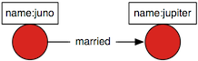
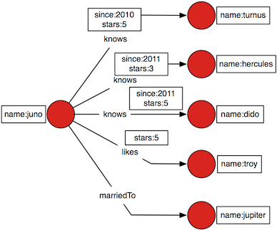

Titan natively implements the Blueprints API which means that Blueprints is the core interface for Titan. Blueprints is an open source, community developed Java interface for graph databases that expose a property graph data model. By implementing Blueprints natively, Titan delivers two benefits:
- Any technology written against the Blueprints API works efficiently and seamlessly on Titan. This includes all open-source products in the TinkerPop graph stack.
- Any application written for Titan can be migrated to another Blueprints enabled graph database, so there is no vendor lock-in.
Introduction to TitanGraph

TitanGraph g = TitanFactory.open("/tmp/titan");
Vertex juno = g.addVertex(null);
juno.setProperty("name", "juno");
Vertex jupiter = g.addVertex(null);
jupiter.setProperty("name", "jupiter");
Edge married = g.addEdge(null, juno, jupiter, "married");
A TitanGraph implements Blueprints’ Graph interface. A TitanGraph is created via the TitanFactory. The TitanFactory.open() method accepts either a local directory or a configuration file or an Apache configuration object containing a Titan Graph Configuration. In the code example above, a directory is used which opens a local Titan instance storing data at that location. Then, two vertices were created named “jupiter” and “juno.” These two vertices were joined in holy matrimony via a married edge.
Please review the Blueprints Core API for a complete listing of all the Blueprints methods available.
Vertex Queries
Continuing with the example above, more vertices are created that are connected to by Juno.

Vertex turnus = g.addVertex(null);
turnus.setProperty("name", "turnus");
Vertex hercules = g.addVertex(null);
hercules.setProperty("name", "hercules")
Vertex dido = g.addVertex(null);
dido.setProperty("name", "dido");
Vertex troy = g.addVertex(null);
troy.setProperty("name", "troy");
Vertex jupiter = g.addVertex(null);
jupiter.setProperty("name", "jupiter");
Edge edge = g.addEdge(null, juno, turnus, "knows");
edge.setProperty("since",2010);
edge.setProperty("stars",5);
edge = g.addEdge(null, juno, hercules, "knows");
edge.setProperty("since",2011);
edge.setProperty("stars",1);
edge = g.addEdge(null, juno, dido, "knows");
edge.setProperty("since", 2011);
edge.setProperty("stars", 5);
g.addEdge(null, juno, troy, "likes").setProperty("stars",5);
Blueprints (and Titan) supports the notion of vertex-centric queries which can be understood as a query of the elements directly connected to a vertex (i.e. incident edges or adjacent vertices). An example vertex query is provided below:
Find all the people that Juno greatly admires who she has known since the year 2011.
Iterable<Vertex> results = juno.query().labels("knows").has("since",2011).has("stars",5).vertices()
The benefit of a vertex query is that it reduces the amount of data that needs to be pulled off the disk and filtered in-memory. This is important when considering extremely branchy graphs or graphs with “hot spots” called hubs or super-nodes. In these situations, it is imperative to reduce the search space to only that which is required for the particular query. Given the diagrammed graph above, if no restrictions are given to the query (e.g. juno.query().vertices()), then 5 vertices are returned.
for(Vertex vertex : juno.query().vertices()) {
System.out.println(vertex.getProperty("name"))
}
// System.out
hercules
turnus
jupiter
dido
troy
However, given the query in the block of code above, only 1 vertex is returned — the Dido vertex. In this way, intelligent filtering provides performance benefits by reducing the processing and memory footprint required of the consuming application.
for(Vertex vertex : juno.query().labels("knows").has("since",2011).has("stars",5).vertices()) {
System.out.println(vertex.getProperty("name"));
}
// System.out
dido
Graph Indices
In the section above, we demonstrated how vertices can be retrieved by following edges in the graph using vertex-centric queries. Vertices can also be retrieved via property indices.
TitanGraph g = TitanFactory.open("/tmp/titan");
g.createKeyIndex("name",Vertex.class);
Vertex juno = g.addVertex(null);
juno.setProperty("name", "juno");
juno = g.getVertices("name","juno").iterator().next();
In the example above, we first create a vertex index for the property key name. Property indices have to be explicitly created, so that Titan knows what needs to be indexed. Next, we create the vertex “juno” and set its name as before. Since we set the property name, the juno vertex is now indexed. We can retrieve it from the index using the getVertices(String,Object) method, which returns an iterable over all vertices that have a matching property.
Titan can also retrieve edges using property indices. Extending on the example above:
g.createKeyIndex("time",Edge.class);
Vertex jena = g.addVertex(null);
jena.setProperty("name", "jena");
Edge e = jena.addEdge("knows",juno);
e.setProperty("time",99);
g.getEdges("time",99).iterator().next();
As in the previous example, we first create an edge index for the property key time. After adding an edge with a time property, we can retrieve that edge using the index.
Read more about Blueprints indices and note the following Titan specific limitations: Key indices need to be created before the key is first used.
Next steps

- Read the Blueprints Manual or the Blueprints Core API JavaDoc for a complete documentation of the Blueprints interface.
- Read about Transaction Handling for accessing a Titan graph concurrently or in a multi-user environment.
- Learn about the Gremlin Query Language to query and manipulate graphs in a concise short-hand manner.